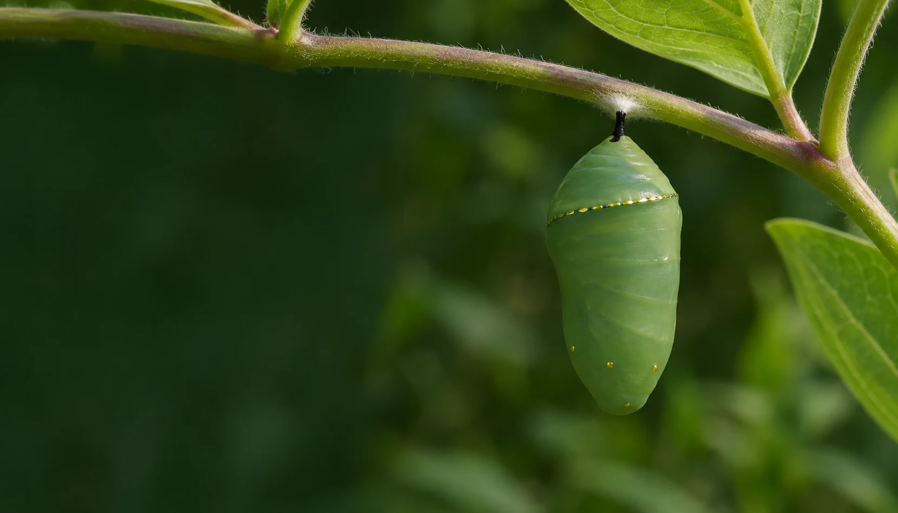
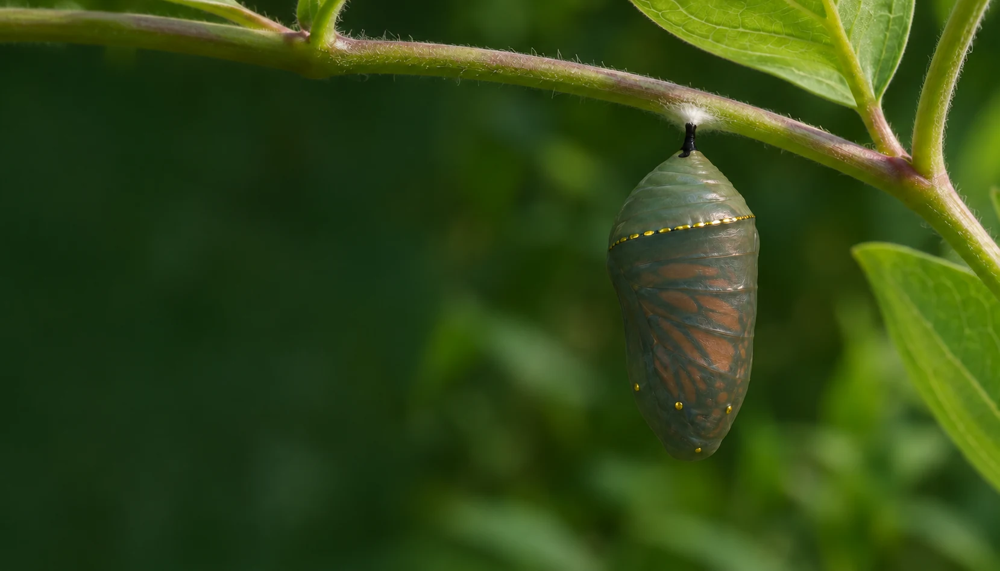
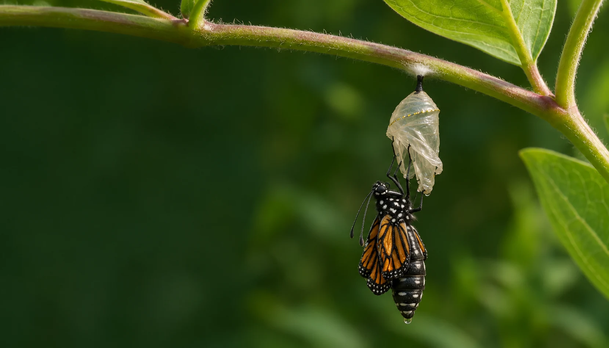

Complete reading edition · Eleven chapters
Everything changes from here.
The architecture of becoming
Beneath a single milkweed leaf, a life begins in a form almost too small to see.
Read the complete story at your own pace. All chapter text, specimen comparisons and explanatory stages are present here without scripts or animation. Images and diagrams accompany the text; the written story remains available if an image cannot load.
Chapter 01 / An Egg in the Green
The smallest beginning.
A monarch begins as a tiny egg, placed on milkweed where the next stage can feed.
A world beneath a leaf
Look for the point where the pearl-colored egg meets the leaf. The plant is already part of this life.
A surface with structure
The ridged casing is called the chorion. Its small, raised lines belong to an eggshell, not a smooth glass sphere.
Danaus plexippus · Monarch butterfly. The view is enlarged; no measurement is implied.
Source notes: U.S. Fish & Wildlife Service · Monarch Watch
Chapter 02 / Milkweed, the Host
The plant is part of the story.
Milkweed is not background decoration: it is the food plant for monarch caterpillars.
Follow the vein
The same marked leaf leads into the larger plant. What looked like a vast green landscape is a small part of the habitat.
A place to begin
Milkweed supports the larval stage. Later, the adult will seek nectar from flowers: one habitat must serve different needs.
The illustrated milkweed is a habitat reference, not a plant-identification guide.
Source notes: U.S. Fish & Wildlife Service · Monarch Joint Venture
Chapter 03 / The Shell Opens
A first opening.
The casing that protected the egg is left behind as the caterpillar enters the leaf world.
The edge gives way
Observe the opening in the shell before looking for the animal. The leaf stays fixed while the first small movement changes the scene.
A larva, newly here
The hatchling remains tiny beside the casing. A young monarch also eats its eggshell before continuing to its host plant.
Three selected illustrated poses describe an event; they do not measure its duration.
Source notes: Monarch Watch
Chapter 04 / The First Meal
The first bite of a new life.
Growth is built from the leaf the young caterpillar is adapted to eat.
At the mouth
Find the feeding point beside the head. The altered leaf margin records a local action, not damage scattered across the scene.
A small absence
Compare the two views. The same leaf and young larva remain; a crescent of missing tissue makes the feeding visible.
The comparison illustrates feeding. It does not represent a measured meal or a fixed feeding rate.
Source notes: Monarch Joint Venture · Monarch Joint Venture
Chapter 05 / Five Instars
Growth has five chapters of its own.
Between molts the caterpillar changes proportions and markings, becoming more capable of feeding.
Growth between molts
An instar is a larval stage between molts. Monarchs pass through five; shedding the old cuticle allows growth to continue.
Look beyond size
Compare the head, bands and filaments. The five specimens below show those differences together.
Five instars, five distinct drawings. Display sizes are illustrative, not a measured growth scale.
Comparative illustrations show identifying features. Their display sizes are not a measured scale.
Source notes: Monarch Joint Venture · Monarch Joint Venture
Chapter 06 / A Place to Hang
The body chooses a still point.
Before becoming a chrysalis, the caterpillar secures itself and hangs in a characteristic J shape.
A new place
A mature larva usually leaves its feeding milkweed to find a pupation site. Here, a nearby support keeps the habitat in view.
The point of contact
The attachment matters as much as the pose. A silk pad supports the hanging animal; the plant, pad and gravity stay aligned.
Observe wild larvae and pupae without moving or handling them.
Source notes: Monarch Joint Venture · Monarch Watch
Chapter 07 / The Jade Vessel
A new surface appears.
As the larval skin is shed, a chrysalis becomes the visible shelter for the next stage.

The final larval skin
The chrysalis emerges from beneath the shed larval skin. The two surfaces are distinct, though the hanging support stays in place.
Still attached
The cremaster, a small structure at the rear of the pupa, anchors it to the silk. Green and gold now define the exterior.
Chrysalis means the butterfly pupa. This is not a spun cocoon.
Source notes: Monarch Watch · U.S. Fish & Wildlife Service
Chapter 08 / Inside the Change
The change is continuous.
The adult develops through real living tissue; the cutaway is an explanatory reconstruction.
An exterior reference
Begin with the intact chrysalis. Keep its outline and attachment in mind while comparing it with the explanatory view below.
Development already under way
Adult structures begin developing during larval life. Wing growth and flight-muscle development continue in the pupa; the animal does not simply dissolve into nothing.
Illustrative reconstruction. Compare the exterior image above with the intentionally simplified diagram below.
Illustrative reconstruction · simplified structures, not microscopy, dissection or a complete anatomical map.
Source notes: Monarch Joint Venture
Chapter 09 / A Pattern Beneath
The pattern begins to show.
Late in the pupal stage, the darkening surface hints at the wings held inside.

Hold the outline
Compare early and late appearances at the same attachment. The casing remains present as the color beneath it changes.
Color, coming into view
Late wing-scale pigmentation makes the pattern visible through the covering. The chrysalis has not become an empty glass vessel.
Temperature and other conditions affect development. This scene supplies no universal countdown.
Source notes: Monarch Joint Venture · Western Monarch Milkweed Mapper
Chapter 10 / Emergence
The first time the wings unfold.
The adult leaves the chrysalis; its wings must expand and settle before flight.

Free of the casing
First, follow the adult leaving the shell. Hanging beneath the spent casing is a separate moment from being ready to fly.
Room for the wings
Fluid expands the wings after emergence. The new adult remains hanging while they unfold and dry.
Three selected moments. They are separate explanatory poses, not equal time intervals.
Leaving the shell · Wings unfolding · Ready for flight. These are selected stages, not equal time intervals.
Source notes: Monarch Joint Venture
Chapter 11 / First Flight
The leaf remains.
What began beneath one leaf can now cross the meadow; the cycle continues beyond this one butterfly.
A different way to move
The settled wings carry the individual beyond the frame. The original plant remains, linking the adult to its beginning.
Four stages, one life cycle
Egg. Larva. Pupa. Adult. Return to any chapter to compare the forms and the different needs each stage brings to a habitat.
This ending follows one imagined monarch. It makes no claim about a migration route or a particular generation.
Source notes: U.S. Fish & Wildlife Service · Monarch Joint Venture
About this experience
CHRYSALIS follows one imagined monarch through a researched life cycle. AI-assisted artwork and authored diagrams interpret the biology; they are not photographs, microscopy or measured time-lapse records. The recurring leaf and support are a composed habitat. Development varies with conditions. Sources were reviewed on 9 November 2026.
The macro scenes are AI-assisted illustrations. The line drawings are authored educational schematics. The leaf, egg, support and wing pattern are continuity devices for a single imagined animal. In nature, the location and duration of development vary.
The inside view is explicitly an illustrative reconstruction. Apparent transparency in that diagram is a drawing convention. The late patterned chrysalis is described through wing pigmentation, while the emergence views distinguish leaving the casing from expanding the wings.
Scientific references support the biology. They do not imply institutional endorsement or permission to reproduce source photographs. No source photograph, logo or original scientific figure has been reused here.
Sources & further observation
Reviewed on . Each chapter points to the relevant entries below.
- U.S. Fish & Wildlife Service — Monarch species profile
Species identity, milkweed, life stages and habitat.
https://www.fws.gov/species/monarch-danaus-plexippus - Monarch Joint Venture — Life Cycle
Instar identification, late pigmentation and emergence.
https://monarchjointventure.org/monarch-biology/life-cycle - Monarch Joint Venture — Growth and Development
Molting, continuous development and environmental variation.
https://monarchjointventure.org/monarch-biology/growth-and-development - Monarch Joint Venture — Why Milkweed?
Specialized larval feeding on milkweed.
https://monarchjointventure.org/monarch-biology/why-milkweed - Monarch Watch — Monarch Biology
Egg structure, larval anatomy and chrysalis attachment.
https://www.monarchwatch.org/biology/ - Monarch Joint Venture — Why do I not see many pupae?
Movement away from the feeding plant before pupation.
https://monarchjointventure.org/faq/mowing-habitat-management/why-dont-i-see-many-pupae - Western Monarch Milkweed Mapper — Western Monarch Biology
Life cycle and temperature-dependent development.
https://www.monarchmilkweedmapper.org/western-monarch-biology/
Observe wild larvae and pupae without moving or handling them. The story is for learning and close attention; it is not a rearing protocol or a diagnosis guide.